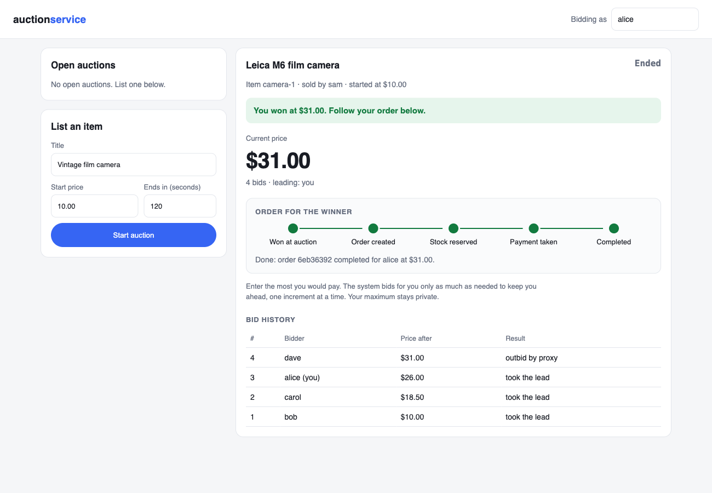

Three services, one order, no oversell.
A SAGA over Kafka keeps stock, payment and order status consistent.
Each service owns its own Postgres. If payment fails, the order rolls back and its stock is released. Verified on AWS EC2.
Team project with Harsh Kokcha. Akshit built the auction service.

Every event, every stop.
Seven Kafka topics carry an order between services. Three of them undo work.
| Topic | From | To | Result |
|---|---|---|---|
| auction-won | auction | order | Order created |
| order-created | order | inventory | Pending |
| inventory-reserved | inventory | payment | Stock reserved |
| payment-confirmed | payment | order | Completed |
| inventory-rejected | inventory | order | Rejected |
| payment-rejected | payment | order | Rolled back |
| order-rolled-back | order | inventory | Stock released |
A message that fails 3 times goes to its .DLT topic instead of blocking the partition.
Measured under load.
A Redis lock per product; version checks and retries for payments and bids.
10of 50
Reservations won
50 at once for 10 units. 40 rejected, none oversold.
0failed
Of 8,487 requests
k6, 20 to 50 users: p95 136.68 ms, p99 202.96 ms, 169.6 req/s.
379retried
Bid conflicts
1,000 bids, 32 threads, one auction. A replay gives the same price.
From a winning bid to a paid order.
The auction service hands its winner to the same SAGA as any order.
- 1
Bid
Proxy bidding: the leader pays one increment over the second-highest maximum.
- 2
Close
The close uses the same version check, so no last bid is lost.
- 3
Hand off
An outbox re-sends the win; the key
auction-{id}makes one order. - 4
Pay
Stock, then payment; a buyer who cannot pay rolls back.
What the first full run broke.
Five bugs, all fixed.
| Found | Fix |
|---|---|
| Images would not build on Apple Silicon | Multi-arch base image |
| Postgres skipped the init script | Executable bit recorded in git |
| SAGA stalled for about 5 minutes | Topics created with 3 partitions before services start |
| A fast payment arrived before its stock event | Pending may go straight to Completed |
| A Completed order reverted | @Version on the order; the loser retries |
git clone https://github.com/akshit9162/Distributed-Order-System
cd Distributed-Order-System
# 31 + 11 tests
(cd auction-service && mvn test)
(cd order-service && mvn test)
# 10 front-end tests
cd auction-service/frontend
npm ci && npm test && cd ../..
# Alice pays; Bob is rolled back
docker compose up -d
until curl -sf localhost:8084/ >/dev/null; do sleep 5; done
scripts/e2e-auctions.sh